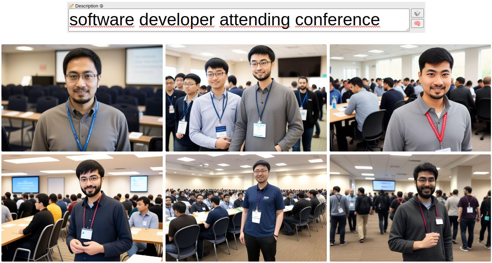
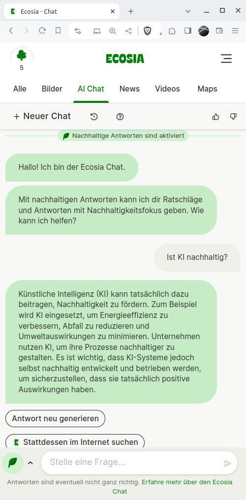

First OpenAI came for the artists and I did not speak out - because I was not an artist.
Then OpenAI came for the writers and I did not speak out - because I was not a writer.
Then OpenAI came for the visual effects artists and I did not speak out - because I was not a visual effects artist.
Then OpenAI came for the programmers - and there was nobody left to speak out for them.
Quelle: https://twitter.com/SteveC/status/1761554509916967285, eig. Hervorhebung
Generative AI has the potential to change the world in ways that we can't even imagine. It has the power to create new ideas, products, and services that will make our lives easier, more productive, and more creative. It also has the potential to solve some of the world's biggest problems, such as climate change, poverty, and disease.
Quelle: forbes.com, eig. Hervorhebung
KI, GIS, EO & FOSS
Erfahrungen & offene Fragen rund um artifizielle Intelligenz
Carmen Tawalika, mundialis
Marc Jansen, terrestris
FOSSGIS 2024 | 21. März 2024 | Hamburg
Carmen Tawalika | mundialis
- Anwendungsentwicklerin & Technical Lead bei mundialis
- Kernentwicklerin & PSC actinia
- Umweltmanagementbeauftragte
- OSGeo Foundation Charter Member
Marc Jansen | terrestris
- Geschäftsführer terrestris
- Kernentwickler & PSC OpenLayers
- GeoExt, SHOGun, GeoStyler …
- Sprecher & Trainer
national & international - OSGeo Foundation Charter Member

Earth Observation und GIS mit FOSS aus Bonn
- Freie Daten und Freie Software
- generisch und maßgeschneidert, immer kundenorientiert
- Softwareentwicklung,
-konzeption & -wartung - Datenprozessierung und sonstige Geo-Dienstleistungen
- mundialis.de | terrestris.de

Über was wir sprechen wollen:
- Begriffsklärungen
- Einige Beispiele / Software / Produkte
- Offene Fragen
Begriffsklärungen

- Künstliche Intelligenz (KI / AI) Intelligente Maschinen, die Aufgaben erfüllen, die eigentlich menschliche Intelligenz benötigen
- Machine Learning (ML) Selbstständiges Lernen aus Daten
- Deep Learning (DL) Imitiert menschliches Lernverhalten mittels großer Datenmengen, …
Quellen: Bild und Inhalte nach datasolut.com, inspiriert durch phind.com
- Deep Learning (DL) Imitiert menschliches Lernverhalten mittels großer Datenmengen, ... ... indem es Neuronale Netze (NN) als Technologie nutzt, welche viele Layer enthalten
- (Künstliche) Neuronale Netze ((K)NN)
Imitieren menschliche Gehirnstruktur
Nicht alle NNs sind DL
DL Architekturen:
- CNN: Convolutional NN für räumliche Klassifizierungen, Bilderkennung (z.B. U-Net, ResNet)
- RNN: Recurrent NN speziell für Zeitreihenanalysen, Text, Sprache
Quellen: Bild und Inhalte nach datasolut.com, inspiriert durch phind.com
- Large Language Models (LLM) Modell zur Verarbeitung und Generierung natürlicher Sprache, trainiert auf großen Mengen an Textdaten (z.B. GPT-3-Modell von OpenAI) CNNs und RNNs können Teil eines LLMs sein
- Artifizielle Generelle Intelligenz (AGI) den menschlichen Fähigkeiten entsprechend oder darüber hinaus Endziel der KI Forschung, bisher nicht realisiert
Quellen: Bild und Inhalte nach datasolut.com, inspiriert durch phind.com
Beispiele
... auf der Konferenz (mind.)
- Verarbeitung hochaufgelöster Umweltdaten auf Basis von OGC API Processes
- Automatisierte Bestimmung der Straßenbeschaffenheit mit Machine Learning
- Workflow zur Erstellung von Trainingsdaten für die KI-Gebäudeerkennung
- Evaluierung von Hausumringen: ALKIS, OSM, Microsoft und unsere KI im Vergleich
- KI-Gebäudeerkennung – Deep-Learning-Modelle zur Aktualisierung der ALKIS-Gebäude
- Open Source and Web-Based GeoAI tool for Transparent Forest Fire Prediction
- Einsatz von Machine Learning zur Erstellung von XPlanGML
- Oberflächenklassifikation aus Luft- und Satellitenbildern mit Hilfe von actinia (WS)
Überwachte Oberflächenklassifizierung mit GRASS GIS
- ML
- GRASS GIS Modul
r.learn.ml2(basiert auf scikit-learn) - Automatisierte Erstellung von Trainingsdaten, z.B. regelbasiert über Grenzwerte
- Trainieren des Modells mit
r.learn.train - Anwenden des Modells auf andere Gebiete mit
r.learn.predict - Beliebt: der
RandomForestClassifier
Bildquellen: GRASS GIS - r.learn.ml2 Dokumentation


El Niño Prognose
- DL
- CNN Architektur inklusive zeitlicher Dimension (Raumzeitwürfel)
- Erstellung des Netzes mit pytorch (torch.nn)
- Beispiel in jupyter notebook
- Input Daten:
- Equatorial Pacific Sea Surface Temperatures (SST)
- COBE Sea Surface Temperature
- GPU System von Vorteil
Bildquellen: El Niño Prognose, internes jupyter notebook
Software will programmiert werden
- OpenAI ChatGPT, Google Gemini/Bard and friends
- GitHub Copilot
- Devin ü§Ø
- Midjourney
- OpenAI Dall-E
- Mockups
- Vorschläge
- Unit-Tests
- Dokumentation
- Chat-Bots
- Reports, Datenaufbereitung
- …
Bildquelle: Kommentare unter AI just officially took our jobs… I hate you Devin vom 13.03.2024
Offene Fragen
- Überprüfbarkeit von KI-basierten Ergebnissen
…auch deshalb lieben wir FOSS - Lizenzierung von KI-generiertem Code
…Angst vor GPL?! - (fehlende) Rechtssicherheit
…aber EU AI Act vom 13.03.24
AI Act: Wikipedia, Freedoms: gnu.org, robot mixing liquids and maps: perchance.org
Offene Fragen - Umwelt und Ethik - "nachhaltige KI"
Ist KI selbst klimaschädlich?
Energieverbrauch · CO2-Emissionen · Umweltschäden · Wasserbedarf & -knappheit · Bedarf an Mineralien
Probleme kann man niemals mit derselben Denkweise lösen, durch die sie entstanden sind.
... oder ist KI ein Mittel gegen die Klimakrise?
Ressourcenverbrauch · Energie- oder Mobilitätswende · Erforschung neuer Materialien
Bildquellen: Ecosia KI · www.un.org ARIES for SEEA · climatechange.ai · Generierte "Casual Photos" mit perchance.org
Offene Fragen
- Wie findet es die Zielgruppe?
- Immer auch Chance!
Hintergrund: Michael Hansmeyer, Computational
Architectur, Chart: faz.net,
Bilder: Generative Kunst von Manolo Gamboa
Naon
Fazit
Danke!
Fragen oder Anmerkungen?
(mehr für Hochinteressierte)
Impressum
Autoren & Kontakt
mundialis GmbH & Co. KG
Kölnstr. 99
53111 Bonn
Deutschland
tawalika@mundialis.de
Marc Jansen
terrestris GmbH & Co. KG
Kölnstr. 99
53111 Bonn
Deutschland
jansen@terrestris.de
Lizenz
Diese Folien sind unter CC BY-SA veröffentlicht.